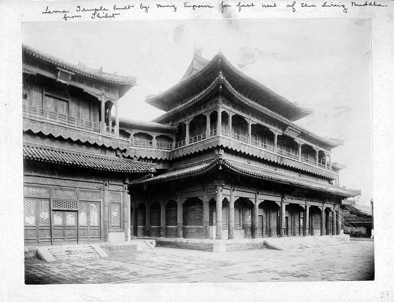

The great Tibetan Buddhist monastery around 1900. A century and a half earlier the Qianlong emperor had lived here as a boy prince, before his father took the throne.
Chandless collection, Wikimedia Commons, public domain
Open in the map